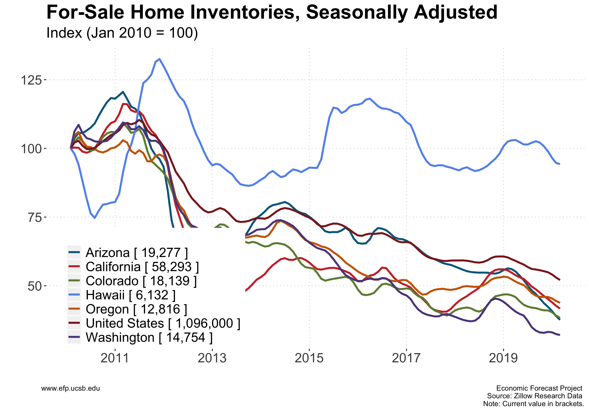
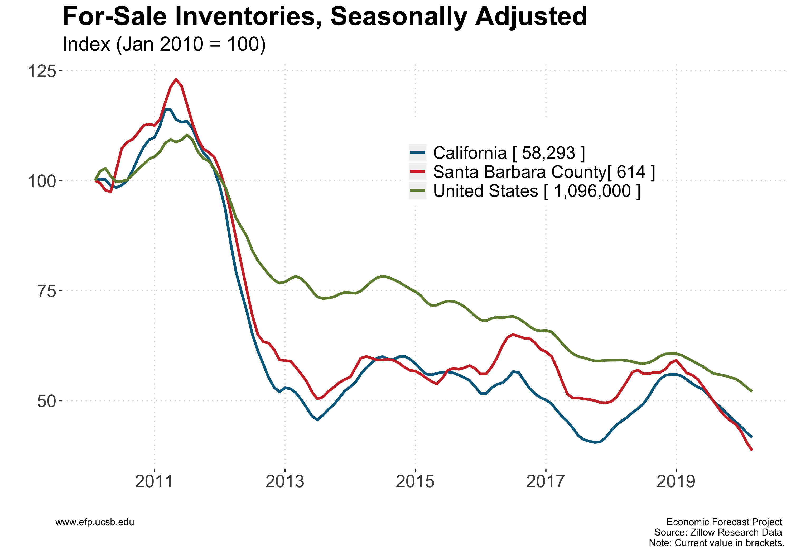

Exploring the Economic Trends of Santa Barbara County
Discussion
Throughout the early aftermath of the Great Recession, housing inventories remained quite high as few sellers were able to find buyers. Beginning in mid 2011, however, housing markets became tighter as buyers began entering the market. The end result was a rapid decrease of inventories across the Western United States. Following this sharp decline, inventories continued to decline, albeit at a slower rate. Recently, several states, including California, Oregon, and Washington, have experienced a small reversal in this trend.
Santa Barbara County is no exception to the post-recession decline. Contrary to the rest of the United States, however, Santa Barbara County did not continue this decline following 2013. Instead, inventories have remained largely constant since then. While there may be many possible explanations for this fact, two potential candidates are as follows. First, Santa Barbara county may have reached its post-recession equilibrium quickly whereas the rest of the United States is still in transition. Second, Santa Barbara County may be insulated from the market forces driving these trends in other parts of the country. In either case, the implication is that Santa Barbara County would not experience the recent trend reversal evident in the rest of California, a fact also evident below.
